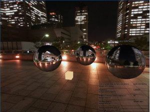

Shows usage of cubemap textures and how to do some simple environment mapping. Cubemap textures have images for all 6 directions of a cube in a single texture. Environment is used to reflect the environment around an object onto the object. Cubemaps only work with shader materials which are written to support cube mapping.
- Author
- Michael Zeilfelder, based on EnvCubeMap example from irrSpintz engine.
Start with the usual includes.
#ifdef _MSC_VER
#pragma comment(lib, "Irrlicht.lib")
#endif
#include <irrlicht.h>
#include "driverChoice.h"
#include "exampleHelper.h"
using namespace irr;
A callback class for our cubemap shader. We need a shader material which maps the cubemap texture to the polygon vertices of objects.
class CubeMapReflectionCallback : public video::IShaderConstantSetCallBack
{
public:
CubeMapReflectionCallback(scene::ISceneManager* smgr, int styleUVW)
: SceneMgr(smgr)
, StyleUVW(styleUVW), Roughness(0.f)
, styleUvwID(-1) , worldViewProjID(-1), worldID(-1), cameraPosID(-1)
{}
Setting the style to map vertex UV-coordinates to the cubemap textures.
- Specular style is typically used for mirrors and highlight reflections.
- Diffuse style is commonly used in image based lighting calculations and often in combination with a higher roughness. Think of it as the sum of all light which reaches a point on your object.
- Using model vertices directly for UV's is just nice for testing sometimes. Maybe has more uses? Experiment around :-)
void SetStyleUVW(int style)
{
StyleUVW = style;
}
int GetStyleUVW() const
{
return StyleUVW;
}
void SetRoughness(float roughness)
{
Roughness = roughness;
}
float getRoughness() const
{
return Roughness;
}
virtual void OnSetMaterial(const video::SMaterial& material)
{}
virtual void OnSetConstants(video::IMaterialRendererServices* services, s32 userData)
{
video::IVideoDriver* driver = services->getVideoDriver();
if ( worldViewProjID < 0 )
{
styleUvwID = services->getVertexShaderConstantID("StyleUVW");
if( driver->getDriverType() == video::EDT_DIRECT3D9 )
{
worldViewProjID = services->getVertexShaderConstantID("WorldViewProj");
}
worldID = services->getVertexShaderConstantID("World");
cameraPosID = services->getVertexShaderConstantID("CameraPos");
roughnessID = services->getPixelShaderConstantID("Roughness");
}
services->setVertexShaderConstant(styleUvwID, &StyleUVW, 1 );
irr::core::matrix4 world = driver->getTransform(irr::video::ETS_WORLD);
services->setVertexShaderConstant(worldID, world.pointer(), 16);
if( driver->getDriverType() == video::EDT_DIRECT3D9 )
{
irr::core::matrix4 worldViewProj;
worldViewProj = driver->getTransform(irr::video::ETS_PROJECTION);
worldViewProj *= driver->getTransform(irr::video::ETS_VIEW);
worldViewProj *= world;
services->setVertexShaderConstant(worldViewProjID, worldViewProj.pointer(), 16);
}
core::vector3df cameraPos = SceneMgr->getActiveCamera()->getAbsolutePosition();
services->setVertexShaderConstant(cameraPosID, &cameraPos.X, 3 );
services->setPixelShaderConstant(roughnessID, &Roughness, 1 );
}
private:
scene::ISceneManager* SceneMgr;
int StyleUVW;
float Roughness;
irr::s32 styleUvwID;
irr::s32 worldViewProjID;
irr::s32 worldID;
irr::s32 cameraPosID;
irr::s32 roughnessID;
};
class MyEventReceiver : public IEventReceiver
{
public:
MyEventReceiver() : Driver(0), Shader(0)
,BackgroundSkybox(0), BackgroundCube(0)
, CubemapUpdates(2)
, CurrentStyleUVW(0), CurrentRoughness(0)
, NeedCubemapUpdate(true)
{
StyleNamesUVW.push_back( L"specular" );
StyleNamesUVW.push_back( L"diffuse" );
StyleNamesUVW.push_back( L"model coordinates" );
}
virtual bool OnEvent(const SEvent& event)
{
if (event.EventType == EET_KEY_INPUT_EVENT && event.KeyInput.PressedDown == false)
{
switch(event.KeyInput.Key )
{
case KEY_SPACE:
if ( Shader )
{
Shader->SetStyleUVW((Shader->GetStyleUVW()+1)%StyleNamesUVW.size());
updateStyleUVW();
}
break;
case KEY_KEY_B:
if ( BackgroundSkybox && BackgroundCube )
{
if ( BackgroundSkybox->isVisible() )
{
BackgroundSkybox->setVisible(false);
BackgroundCube->setVisible(true);
}
else
{
BackgroundSkybox->setVisible(true);
BackgroundCube->setVisible(false);
}
NeedCubemapUpdate = true;
}
break;
case KEY_KEY_I:
for (u32 i=0; i<InfoTextNodes.size(); ++i )
InfoTextNodes[i]->setVisible(!InfoTextNodes[i]->isVisible());
break;
case KEY_KEY_S:
if ( Driver )
{
Driver->disableFeature(video::EVDF_TEXTURE_CUBEMAP_SEAMLESS, Driver->queryFeature(video::EVDF_TEXTURE_CUBEMAP_SEAMLESS) );
updateSeamless();
}
break;
case KEY_KEY_U:
CubemapUpdates = (CubemapUpdates+1) % 3;
updateCubemapUpdates();
break;
case KEY_PLUS:
case KEY_ADD:
if ( Shader )
{
Shader->SetRoughness( Shader->getRoughness() + 0.5f );
updateRoughness();
}
break;
case KEY_MINUS:
case KEY_SUBTRACT:
{
if ( Shader )
{
float roughness = Shader->getRoughness() - 0.5f;
if ( roughness >= 0.f )
{
Shader->SetRoughness(roughness);
updateRoughness();
}
}
break;
}
default:
break;
}
}
return false;
}
void updateStyleUVW()
{
if ( CurrentStyleUVW && Shader)
CurrentStyleUVW->setText(StyleNamesUVW[Shader->GetStyleUVW()].c_str());
}
void updateRoughness()
{
if ( CurrentRoughness && Shader )
{
CurrentRoughness->setText( irr::core::stringw(Shader->getRoughness()).c_str() );
}
}
void updateSeamless()
{
if ( CurrentSeamlessCubemap && Driver )
{
CurrentSeamlessCubemap->setText( Driver->queryFeature(video::EVDF_TEXTURE_CUBEMAP_SEAMLESS) ? L"ON" : L"OFF" );
}
}
void updateCubemapUpdates()
{
if ( CurrentCubemapUpdates )
{
switch ( CubemapUpdates )
{
case 0: CurrentCubemapUpdates->setText( L"static"); break;
case 1: CurrentCubemapUpdates->setText( L"dynamic" ); break;
case 2: CurrentCubemapUpdates->setText( L"dynamic+mips" ); break;
}
}
}
int checkCubemapUpdate()
{
if ( NeedCubemapUpdate || CubemapUpdates == 2)
{
NeedCubemapUpdate = false;
return 2;
}
return CubemapUpdates;
}
void addInfoTextNode(irr::gui::IGUIFont* font, const wchar_t* text, irr::scene::ISceneNode* parent)
{
if ( parent )
{
const video::SColor infoTextCol(250, 70, 90, 90);
core::dimension2du dim(font->getDimension(text));
core::dimension2df dimf((f32)dim.Width, (f32)dim.Height);
scene::IBillboardTextSceneNode* infoNode = parent->getSceneManager()->addBillboardTextSceneNode( font, text, parent, dimf, core::vector3df(0, 120, 0), -1, infoTextCol, infoTextCol);
InfoTextNodes.push_back(infoNode);
}
}
irr::video::IVideoDriver* Driver;
CubeMapReflectionCallback* Shader;
scene::ISceneNode* BackgroundSkybox;
scene::ISceneNode* BackgroundCube;
irr::core::array<scene::ISceneNode*> InfoTextNodes;
int CubemapUpdates;
irr::core::array<irr::core::stringw> StyleNamesUVW;
irr::gui::IGUIStaticText* CurrentStyleUVW;
irr::gui::IGUIStaticText* CurrentRoughness;
irr::gui::IGUIStaticText* CurrentSeamlessCubemap;
irr::gui::IGUIStaticText* CurrentCubemapUpdates;
private:
bool NeedCubemapUpdate;
};
So... the following 2 defines are two different workarounds I found. Both are ugly, which one is better in reality depends probably on the scene. Only use one of those: CUBEMAP_UPSIDE_DOWN_GL_PROJECTION is relatively fast as it just changes the project matrix. The problem is that changing the projection matrix means changing front/backside culling. So every node rendered has to flip the material flags for those.
CUBEMAP_USPIDE_DOWN_RTT will change the texture memory itself and flip the image upside-down. While easier to do, this involves texture-locking and is very slow.
#define CUBEMAP_UPSIDE_DOWN_GL_PROJECTION
#ifdef CUBEMAP_UPSIDE_DOWN_GL_PROJECTION
void flipCullingFlags(const core::array<scene::ISceneNode*>& nodes)
{
for ( irr::u32 n=0; n < nodes.size(); ++n )
{
scene::ISceneNode* node = nodes[n];
const irr::u32 matCount = node->getMaterialCount();
for ( irr::u32 m=0; m < matCount; ++m)
{
video::SMaterial& mat = node->getMaterial(m);
mat.BackfaceCulling = !mat.BackfaceCulling;
mat.FrontfaceCulling = !mat.FrontfaceCulling;
}
}
}
#endif
Render the environment around a node into a cubemap texture.
void renderEnvironmentCubeMap(irr::video::IVideoDriver* driver, irr::scene::ICameraSceneNode* cubeMapCamera, irr::scene::ISceneNode* cubeCenterNode, video::IRenderTarget* cubeMapRT, video::ITexture* dynamicCubeMapRTT, video::ITexture* depthStencilRTT)
{
scene::ISceneManager* smgr = cubeMapCamera->getSceneManager();
scene::ICameraSceneNode * oldCam = smgr->getActiveCamera();
smgr->setActiveCamera( cubeMapCamera );
We want to see everything around the center node, so hide the node itself, otherwise it would be in the way. Then set the camera to that node's position.
cubeCenterNode->setVisible( false );
const core::vector3df center( cubeCenterNode->getAbsolutePosition() );
cubeMapCamera->setPosition( center );
Render all 6 directions. Which means simple setting the camera target/up vector to all 6 directions and then render the full scene each time. So yeah - updating an environment cube-map means 6 full renders for each object which needs an environment map. In other words - you generally only want to do that in pre-processing, not in realtime.
const core::vector3df targetVecs[6] = {
core::vector3df(1.f, 0.f, 0.f),
core::vector3df(-1.f, 0.f, 0.f),
core::vector3df(0.f, 1.f, 0.f),
core::vector3df(0.f, -1.f, 0.f),
core::vector3df(0.f, 0.f, 1.f),
core::vector3df(0.f, 0.f, -1.f)
};
const core::vector3df upVecs[6] = {
core::vector3df( 0,1,0 ),
core::vector3df( 0,1,0 ),
core::vector3df( 0,0,-1 ),
core::vector3df( 0,0,1 ),
core::vector3df( 0,1,0 ),
core::vector3df( 0,1,0 )
};
for ( int s=0; s<6; ++s )
{
cubeMapCamera->setUpVector( upVecs[s] );
cubeMapCamera->setTarget( center + targetVecs[s] );
cubeMapRT->setTexture(dynamicCubeMapRTT, depthStencilRTT, (video::E_CUBE_SURFACE)(video::ECS_POSX + s));
driver->setRenderTargetEx(cubeMapRT, video::ECBF_ALL);
smgr->drawAll();
#ifdef CUBEMAP_USPIDE_DOWN_RTT
driver->setRenderTarget(0);
dynamicCubeMapRTT->lock(video::ETLM_READ_WRITE, 0, s, video::ETLF_FLIP_Y_UP_RTT);
dynamicCubeMapRTT->unlock();
#endif
}
driver->setRenderTarget(0);
cubeCenterNode->setVisible( true );
smgr->setActiveCamera( oldCam );
}
Typical setup at the main start.
int main()
{
video::E_DRIVER_TYPE driverType = driverChoiceConsole();
if (driverType==video::EDT_COUNT)
return 1;
MyEventReceiver eventReceiver;
const core::dimension2d<u32> dimDevice(1024, 768);
IrrlichtDevice* device = createDevice( driverType, dimDevice, 32, false, false, false, &eventReceiver );
if (!device)
return 1;
const io::path mediaPath = getExampleMediaPath();
video::IVideoDriver* driver = device->getVideoDriver();
scene::ISceneManager* smgr = device->getSceneManager();
gui::IGUIEnvironment* env = device->getGUIEnvironment();
eventReceiver.Driver = driver;
core::stringw strCaption(L"Cubemap example - Irrlicht Engine [");
strCaption += driver->getName();
strCaption += L"]";
device->setWindowCaption(strCaption.c_str());
gui::IGUISkin* skin = env->getSkin();
gui::IGUIFont* font = env->getFont(mediaPath + "fonthaettenschweiler.bmp");
if (font)
skin->setFont(font);
Create a shader material for cube mapping
video::IGPUProgrammingServices* gpu = driver->getGPUProgrammingServices();
s32 cubeMapReflectionMaterial = 0;
if( gpu )
{
irr::io::path vsFileName;
irr::io::path psFileName;
switch( driverType )
{
case video::EDT_DIRECT3D9:
vsFileName = mediaPath + "cubeMapReflectionVS.hlsl";
psFileName = mediaPath + "cubeMapReflectionPS.hlsl";
break;
case video::EDT_OPENGL:
vsFileName = mediaPath + "cubeMapReflection.vert";
psFileName = mediaPath + "cubeMapReflection.frag";
break;
}
CubeMapReflectionCallback* cubeMapCB = new CubeMapReflectionCallback(smgr, 2);
cubeMapReflectionMaterial = gpu->addHighLevelShaderMaterialFromFiles(
vsFileName, "VS", video::EVST_VS_1_1,
psFileName, "PS", video::EPST_PS_3_0,
cubeMapCB, video::EMT_SOLID );
if ( cubeMapReflectionMaterial >= 0 )
eventReceiver.Shader = cubeMapCB;
cubeMapCB->drop();
}
scene::ICameraSceneNode* camera = smgr->addCameraSceneNodeFPS(0, 100.f, 1.f);
camera->setPosition( core::vector3df( 0,10,-200 ) );
device->getCursorControl()->setVisible(false);
Get 6 images forming a cubemap. The coordinate system used in those images seemed to be different than the one in Irrlicht. I decided to leave it like that because it's pretty common that way. If you get cubemap textures which seem to have x/y/z axis named different you'll just have to experiment until you figured out the correct order.
core::array<video::IImage*> cubeMapImages;
cubeMapImages.push_back(driver->createImageFromFile( mediaPath + "cubemap_posx.jpg" ));
cubeMapImages.push_back(driver->createImageFromFile( mediaPath + "cubemap_negx.jpg" ));
cubeMapImages.push_back(driver->createImageFromFile( mediaPath + "cubemap_posy.jpg" ));
cubeMapImages.push_back(driver->createImageFromFile( mediaPath + "cubemap_negy.jpg" ));
cubeMapImages.push_back(driver->createImageFromFile( mediaPath + "cubemap_posz.jpg" ));
cubeMapImages.push_back(driver->createImageFromFile( mediaPath + "cubemap_negz.jpg" ));
Create a cubemap texture from those images. Note that 6 images become a single texture now.
video::ITexture* cubeMapStaticTex = 0;
cubeMapStaticTex = driver->addTextureCubemap("cm", cubeMapImages[0], cubeMapImages[1], cubeMapImages[2], cubeMapImages[3], cubeMapImages[4], cubeMapImages[5]);
for ( u32 i=0; i<cubeMapImages.size(); ++i )
if ( cubeMapImages[i] )
cubeMapImages[i]->drop();
cubeMapImages.clear();
Create a render target, cubemap render-target-textures and a camera with settings for cube mapping
video::IRenderTarget* cubeMapRT = driver->addRenderTarget();
video::ITexture* dynamicCubeMapRTT = 0;
video::ITexture* depthStencilRTT = 0;
video::ITexture* dynamicCubeMapRTT_intermediate = 0;
video::ITexture* dynamicCubeMapTex = 0;
scene::ICameraSceneNode* cubeMapCamera = 0;
if( driver->queryFeature( video::EVDF_RENDER_TO_TARGET ) )
{
const u32 dynamicCubeMapSize = 512;
dynamicCubeMapRTT = driver->addRenderTargetTextureCubemap(dynamicCubeMapSize, "cube_rtr");
depthStencilRTT = driver->addRenderTargetTexture(irr::core::dimension2du(dynamicCubeMapSize, dynamicCubeMapSize), "cubemap_ds", irr::video::ECF_D24S8);
dynamicCubeMapRTT_intermediate = driver->addRenderTargetTextureCubemap(dynamicCubeMapSize, "cube_rtr");
dynamicCubeMapTex = driver->addTextureCubemap(dynamicCubeMapSize, "cube_tex");
cubeMapCamera = smgr->addCameraSceneNode();
cubeMapCamera->setFOV(core::PI* 0.5f);
cubeMapCamera->setAspectRatio(1.f);
smgr->setActiveCamera( camera );
}
Add sphere-nodes which will be using the cubemaps as materials. You may also want to experiment with other node-types here!
scene::ISceneNode* sphereNode = 0;
scene::ISceneNode* sphereNode2 = 0;
scene::ISceneNode* sphereNode3 = 0;
scene::IMesh* sphereMesh = smgr->getGeometryCreator()->createSphereMesh(100.f);
if( sphereMesh )
{
sphereNode = smgr->addMeshSceneNode( sphereMesh );
sphereNode->setPosition( core::vector3df(-250,0,0) );
sphereNode->updateAbsolutePosition();
sphereNode->setMaterialFlag( video::EMF_LIGHTING, false );
sphereNode->setMaterialTexture( 0, dynamicCubeMapRTT );
sphereNode->setMaterialType( (video::E_MATERIAL_TYPE)cubeMapReflectionMaterial );
eventReceiver.addInfoTextNode(font, L"Cubemap dynamic rtt, no mip-maps", sphereNode);
if ( dynamicCubeMapTex )
{
sphereNode3 = smgr->addMeshSceneNode( sphereMesh );
sphereNode3->setPosition( core::vector3df(0,0,250) );
sphereNode3->updateAbsolutePosition();
sphereNode3->setMaterialFlag( video::EMF_LIGHTING, false );
sphereNode3->setMaterialTexture( 0, dynamicCubeMapTex );
sphereNode3->getMaterial(0).TextureLayer[0].TrilinearFilter = false;
sphereNode3->setMaterialType( (video::E_MATERIAL_TYPE)cubeMapReflectionMaterial );
eventReceiver.addInfoTextNode(font, L"Cubemap dynamic with mip-maps", sphereNode3);
}
if ( cubeMapStaticTex )
{
sphereNode2 = smgr->addMeshSceneNode( sphereMesh );
sphereNode2->setPosition( core::vector3df(250,0,0) );
sphereNode2->updateAbsolutePosition();
sphereNode2->setMaterialFlag( video::EMF_LIGHTING, false );
sphereNode2->setMaterialTexture( 0, cubeMapStaticTex );
sphereNode2->getMaterial(0).TextureLayer[0].TrilinearFilter = true;
sphereNode2->setMaterialType( (video::E_MATERIAL_TYPE)cubeMapReflectionMaterial );
eventReceiver.addInfoTextNode(font, L"Cubemap fixed images", sphereNode2);
}
sphereMesh->drop();
}
Add some background which will show up in the environment maps. For first one we use the same textures as used in the spheres. Note the difference between a skybox and a cubemap is that the skybox really uses 6 different textures. While the cubemap uses a single texture created from 6 images.
eventReceiver.BackgroundSkybox = smgr->addSkyBoxSceneNode(
driver->getTexture(mediaPath + "cubemap_posy.jpg"),
driver->getTexture(mediaPath + "cubemap_negy.jpg"),
driver->getTexture(mediaPath + "cubemap_posz.jpg"),
driver->getTexture(mediaPath + "cubemap_negz.jpg"),
driver->getTexture(mediaPath + "cubemap_posx.jpg"),
driver->getTexture(mediaPath + "cubemap_negx.jpg"));
Another background for comparison and to make it more obvious when the spheres reflect the environment and when they use static cubemaps.
scene::IMesh * cubeMesh = smgr->getGeometryCreator()->createCubeMesh( core::vector3df(10.f, 10.f, 10.f), scene::ECMT_6BUF_4VTX_NP);
smgr->getMeshManipulator()->scale(cubeMesh, core::vector3df(-1, 1, 1));
if( cubeMesh )
{
smgr->getMeshManipulator()->setVertexColors( cubeMesh->getMeshBuffer(0), video::SColor(255, 240, 10, 10) );
smgr->getMeshManipulator()->setVertexColors( cubeMesh->getMeshBuffer(1), video::SColor(255, 240, 130, 10) );
smgr->getMeshManipulator()->setVertexColors( cubeMesh->getMeshBuffer(2), video::SColor(255, 50, 250, 10) );
smgr->getMeshManipulator()->setVertexColors( cubeMesh->getMeshBuffer(3), video::SColor(255, 70, 10, 250) );
smgr->getMeshManipulator()->setVertexColors( cubeMesh->getMeshBuffer(4), video::SColor(255, 240, 250, 10) );
smgr->getMeshManipulator()->setVertexColors( cubeMesh->getMeshBuffer(5), video::SColor(255, 85, 250, 250) );
eventReceiver.BackgroundCube = smgr->addMeshSceneNode( cubeMesh );
cubeMesh->drop();
eventReceiver.BackgroundCube->setScale( core::vector3df( 200, 200, 200 ) );
eventReceiver.BackgroundCube->setMaterialFlag( video::EMF_LIGHTING, false );
eventReceiver.BackgroundCube->setVisible(false);
}
#ifdef CUBEMAP_UPSIDE_DOWN_GL_PROJECTION
if ( driverType == video::EDT_OPENGL )
{
core::matrix4 matProj = cubeMapCamera->getProjectionMatrix();
matProj[4] = -matProj[4];
matProj[5] = -matProj[5];
matProj[6] = -matProj[6];
matProj[7] = -matProj[7];
cubeMapCamera->setProjectionMatrix(matProj);
}
#endif
Add some moving node to show the difference between static/dynamic environment maps
scene::IMeshSceneNode * movingNode = smgr->addCubeSceneNode(30.f);
movingNode->getMaterial(0).Lighting = false;
smgr->getMeshManipulator()->setVertexColors( movingNode->getMesh()->getMeshBuffer(0), video::SColor(255, 230, 200, 150));
scene::ISceneNodeAnimator* circleAnimator = smgr->createFlyCircleAnimator(core::vector3df(-125, -50.f, 125), 300.f, 0.0005f);
movingNode->addAnimator(circleAnimator);
circleAnimator->drop();
Add some UI
if ( eventReceiver.Shader )
{
skin->setColor(gui::EGDC_3D_FACE, video::SColor(50, 160, 120, 120));
u32 top = dimDevice.Height - 200;
const u32 left = dimDevice.Width - 350;
const u32 right = dimDevice.Width - 10;
irr::gui::IGUIStaticText * stextUVW = env->addStaticText(L" Style of generating texture coordinates:\n Change with (space)", core::recti(left, top, right, top+35), false, true, 0, -1, true);
top += 40;
stextUVW->setTextAlignment(gui::EGUIA_UPPERLEFT, gui::EGUIA_UPPERLEFT);
eventReceiver.CurrentStyleUVW = env->addStaticText(L"", core::recti(240,0, 400, 20), false, false, stextUVW);
eventReceiver.updateStyleUVW();
irr::gui::IGUIStaticText * stextRoughness = env->addStaticText(L" Roughness:\n Change with (+) and (-)", core::recti(left, top, right, top+35), false, true, 0, -1, true);
top += 40;
eventReceiver.CurrentRoughness = env->addStaticText( L"", core::recti(240,0, 400, 20), false, false, stextRoughness);
eventReceiver.updateRoughness();
irr::gui::IGUIStaticText * stextSeamlessCupemap = env->addStaticText(L" Seamless cubemap (with roughness):\n Change with (s)", core::recti(left, top, right, top+35), false, true, 0, -1, true);
top += 40;
eventReceiver.CurrentSeamlessCubemap = env->addStaticText( L"", core::recti(240,0, 400, 20), false, false, stextSeamlessCupemap);
eventReceiver.updateSeamless();
irr::gui::IGUIStaticText * stextUpdates = env->addStaticText(L" Cubemap updates:\n Change with (u)", core::recti(left, top, right, top+35), false, true, 0, -1, true);
top += 40;
eventReceiver.CurrentCubemapUpdates = env->addStaticText( L"", core::recti(240,0, 400, 20), false, false, stextUpdates);
eventReceiver.updateCubemapUpdates();
env->addStaticText(L" Change background with (b)", core::recti(left, top, right, top+15), false, true, 0, -1, true);
top += 20;
env->addStaticText(L" Show/hide info nodes with (i)", core::recti(left, top, right, top+15), false, true, 0, -1, true);
}
Main loop
while(device->run())
{
if (device->isWindowActive())
{
driver->beginScene(true, true, video::SColor(255, 127, 127, 255));
Check if we want to update the environment maps. Usually not something you'll do every frame, but either once at the star or maybe updating an environment map once in a while.
int updateCubemaps = eventReceiver.checkCubemapUpdate();
if( dynamicCubeMapRTT && sphereNode && updateCubemaps > 0 )
{
#ifdef CUBEMAP_UPSIDE_DOWN_GL_PROJECTION
core::array<scene::ISceneNode*> allNodes;
if ( driverType == video::EDT_OPENGL )
{
Flipping projection matrix flips front/backface culling. We only have a skybox so in this case this still would be fast, with more objects it's getting more ugly.
smgr->getSceneNodesFromType(scene::ESNT_ANY, allNodes);
flipCullingFlags(allNodes);
}
#endif
If rendered just once then this node has still a white (or even undefined) texture at this point Just hiding it and render the background when rendering the cubemap for the other node is less noticable than having a big white dot in the environment texture. Render order can matter if you want several environment maps in your scene.
if (sphereNode3)
sphereNode3->setVisible(false);
renderEnvironmentCubeMap(driver, cubeMapCamera, sphereNode, cubeMapRT, dynamicCubeMapRTT, depthStencilRTT);
if ( sphereNode3)
{
if ( updateCubemaps == 2 )
{
Our rtt's unfortunately don't have mipmaps (sorry, not sure if we can get that somehow...) So if we want mipmaps in the dynamic cubemap we have to copy it to a non-rtt texture. Warning: Very, very slow. Far slower than just creating an environment map as this will copy the texture from GPU to main memory - copy it to a new texture, create mip-maps and upload the result back to the GPU.
renderEnvironmentCubeMap(driver, cubeMapCamera, sphereNode3, cubeMapRT, dynamicCubeMapRTT_intermediate, depthStencilRTT);
for ( int i=0; i<6; ++i)
{
void * rtData = dynamicCubeMapRTT_intermediate->lock(video::ETLM_READ_ONLY, 0, i, video::ETLF_NONE);
void * tData = dynamicCubeMapTex->lock(video::ETLM_READ_WRITE, 0, i);
memcpy(tData, rtData, dynamicCubeMapTex->getPitch()*dynamicCubeMapTex->getSize().Width);
dynamicCubeMapRTT_intermediate->unlock();
dynamicCubeMapTex->unlock();
dynamicCubeMapTex->regenerateMipMapLevels();
}
}
sphereNode3->setVisible(true);
}
#ifdef CUBEMAP_UPSIDE_DOWN_GL_PROJECTION
if ( driverType == video::EDT_OPENGL )
{
flipCullingFlags(allNodes);
}
#endif
}
smgr->drawAll();
env->drawAll();
driver->endScene();
}
}
device->drop();
return 0;
}